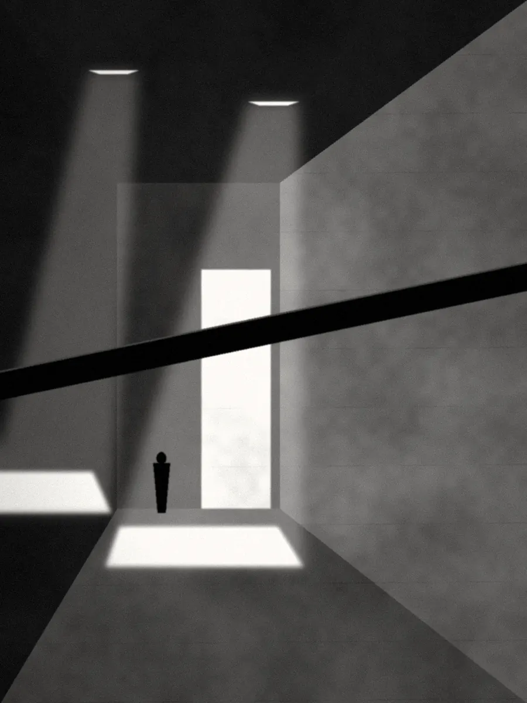

Nu te zien
Sanctuary of Absurdity
De nieuwe serie compleet. De grote prints, 150 × 120 cm, hangen er voor het eerst, naast een wand met kleinere werkprints uit dezelfde winter.
- Locatie
- Galerie Betonwerk
- Stad
- Rotterdam
- Data
- 14 nov 2026 – 31 jan 2027
- Soort
- Solotentoonstelling
- Status
- Nu te zien